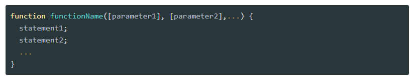
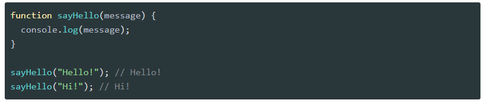
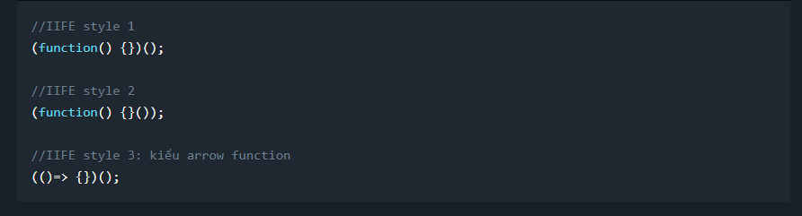
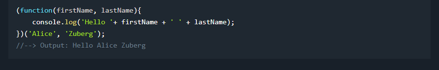
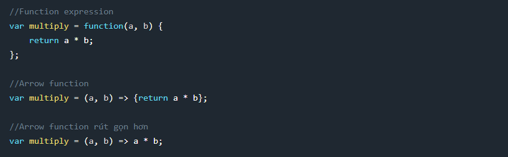

Function JavaScript (hàm trong JavaScript) là một thành phần không thể thiếu trong cấu trúc chương trình. Hàm giúp chương trình trở nên rõ ràng, dễ hiểu bằng cách gộp những đoạn code lặp lại. Nhờ vậy mà việc bảo trì phần mềm cũng dễ dàng hơn.
Hàm trong JavaScript là một chương trình con giúp thực thi một công việc cụ thể. Để định nghĩa hàm trong JavaScript, bạn sử dụng từ khoá function với cú pháp là:
Trong đó:
Một biến được khai báo bên trong hàm, chỉ sử dụng được bên trong thân hàm
đó. Biến này gọi là biến cục bộ (hay biến địa phương).
Ví dụ về biến cục bộ trong JavaScript:
Một biến được khai báo ở ngoài tất cả các hàm, gọi là biến toàn cục. Biến toàn cục có thể được sử dụng và thay đổi giá trị ở mọi nơi trong chương trình. Vì vậy, bạn nên hạn chế sử dụng biến toàn cục. Điều này giúp hàm trở nên tốt hơn, dễ dàng tái sử dụng hơn (vì nó độc lập với các biến bên ngoài).
Trong trường hợp bạn muốn sử dụng giá trị của biến bên ngoài vào trong thân hàm, bạn có thể truyền tham số vào hàm (thay vì sử dụng biến toàn cục).
Các biến được khai báo trong một function thì sẽ có function scope, do đó ta không thể truy cập đến các biến này được. Một function có thể truy cập tới bất kỳ các biến hoặc thậm chí các hàm trong cùng phạm vi mà nó được định nghĩa. Giải thích một cách đơn giản là một function được khai báo ở global scope thì có thể truy cập đến các biến được khai báo ở global scope Một function được định nghĩa bên trong một function khác thì có thể truy cập đến các biến được khai báo bên trong function cha chứa nó, đồng thời nó cũng có thể truy cập đến tất cả các biến mà function cha chứa nó có thể truy cập đến.
Cú pháp của nó như sau:
Ví dụ

Đây là một cách viết function mới, được ra mắt trong ES6 giúp tiết kiệm
thời gian code cũng như đơn giản hóa phạm vi của function.
Cú pháp như sau:
Ví dụ
